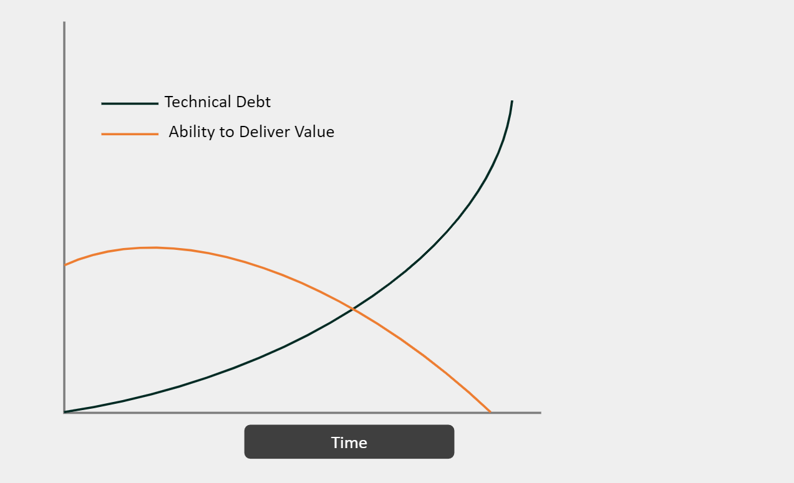
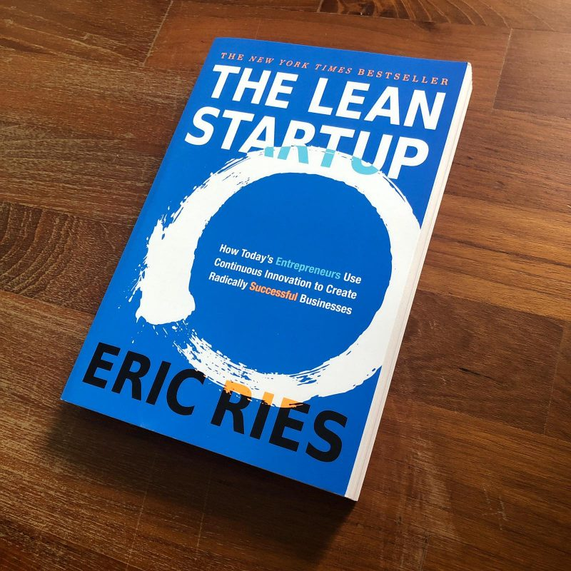
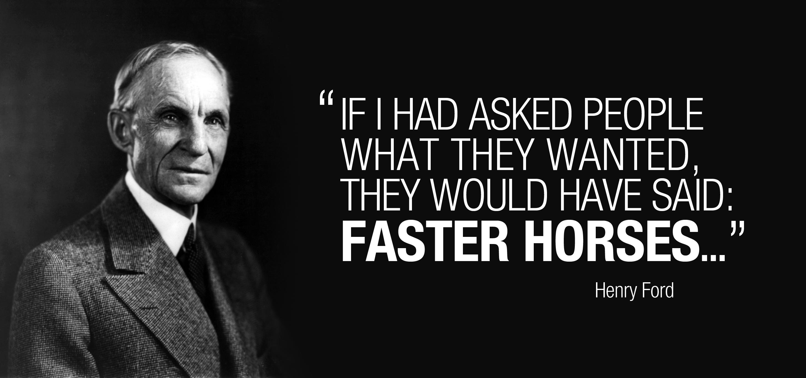
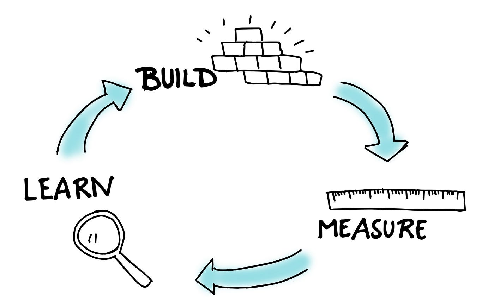

Lean Startup
Lipa brown bag session
March 28, 2024
Gabriel Comte
Intro
- My own startup
- Startup schooling
- Lean Startup
- Lipals should know
- Let's make it our culture
We're engineers ...
Let's build good software!
- Build it right, less worries in future
- Reusable
- Maintainable
- Readable
- Tested (less bugs)
- ...
- Generally: High quality SW!
SW quality
The (t)ear-rings
The book
The book
"A startup is a human institution designed to create a new product or service under conditions of extreme uncertainty."
- Eric Ries, The Lean Startup
The book
"The goal of a startup is to figure out the right thing to build—the thing customers want and will pay for—as quickly as possible."
- Eric Ries, The Lean Startup
What must we figure out?
- What customers want
- NOT what we think they should want
- NOT what they say they want
What they say they want
Meaning of lean
- Reduce waste
- Manufacturing: Providing value to customer, everything else is waste
- Lean Startup: Figure out the right thing to build, everything else is waste
Validated learning
- Define what you want to learn
- Define metrics
- Keep learning
Build-Measure-Learn
Learn
What do we want to learn??
- Startup Hypothesis
- Find your assumptions!
Assumptions
"People are willing to assemble their own furniture at home"
Assumptions
Assumptions
"Commuters want to be able to order food from their cars"
Assumptions
Assumptions
"People are willing to pay monthly for being able to stream unlimited music online"
Assumptions
Assumptions
"Senior devs want to learn git rebase"
Lipa wallet assumptions
Basic assumptions
- Value assumption: Lipa is valuable for user: After initial install, user keeps using app.
- Growth assumption: Users will recommend wallet to friends.
Lipa wallet assumptions
USP: better UX
"We're gonna be successful, because we have better UX!"
- Lipal
Lipa wallet assumptions
USP: better UX
- Lightning apps would be used more if UX was better
- Users of other LN wallets would switch to a better UX wallet
- More people would join the Lightning Network if the UX was easier
- Non-LN Bitcoiners would start adopting LN
- No-coiners would start adopting Bitcoin (through LN)
- Abstracting away technology creates a better UX
Feature assumptions
Sending to phone numbers
"This feature is how we deliver our USP (better UX)!"
- Lipal
Feature assumptions
Sending to phone numbers
- Sending to contacts is a UX improvement
- Users prefer sending to contacts than to a username
- Users have the contact of the people they want to transfer with
- The receivers also use Lipa wallet (sufficient market penetration)
Validate Assumptions
Find out users needs (measure)
- Ask (potential) user (qualitative)
- Beware of the faster horses!
- A/B testing
- Measure clicks/engagement
- Smoke tests > "Open contacts"
- Kickstarter
Minimal viable product
Start the process of learning as quickly as possible
Minimal viable product
Mental hurdles
- We want to ship good software
- What are users gonna think about our product?
- What are people gonna think about my code?
MVP
- Dropbox - Video
- Concierge MVP
- Fake tech (manual labour instead)
Story time
Relai & Pocket
- I worked at Relai
- Julian saw an opportunity when regulations stopped Bittr
- A year later, Pocket shows up - competition!
- Pocket actually started earlier than Relai!
- What if Pocket released a basic MVP much earlier?
Story time
bitcointreasuries.net
Developing the mock SW
Let's release an MVP to Nenia!
- Learn what she needs and what not
- Users want LSP channel opening fees to be mocked differently
- But want it to be mocked!
- Fast iteration
MVP ideas
Announce everything
New features, new versions, PLANNED features, design changes, changes in dependencies/3rd party systems
3 A's of metrics
- Actionable: Cause and effect are clearly understood. WHY more users?
- Accessible: Data is available to everyone and unambiguously understandable
- Auditable: Which user led to metric? --> User can be contacted
Cannot validate assumptions
- Get qualitative feedback
- Try to improve metrics
- Are we just not delivering the value well enough? (Doing the thing right)
Cannot validate assumptions after many iterations
- Not enough demand for value prop
- Pivot (Doing the right thing)
Engines of growth
- Sticky - build on existing customers
- Viral (Bringing in new customer is part of using solution > Facebook / Twint)
- Paid (Ads, referrals, ...)
Idea for viral
- The Hotmail story
- Do the same with invoice memos
- "Lipa Wallet"
- "Stack sats directly onto Lightning with Lipa Wallet"
- Premium users can disable this
High frequency releases
- Iterating through BML-loop faster > quicker learning
- Were already doing that
- EXCEPT: Initial release
Problem with lean startup methodology
- Get user into funnel
- 'Buy' batches of users
- Measure their behavior
- Iterate on build-measure-learn feedback loop
- Loop not possible without users!
Off-topic
- Probably other Lipals know more about these topics than me
- Why am I giving this talk?
- Can we have a brown bag
- From marketing?
- From the founders?
- From product owner?
- YOU HAVE MORE TO SHARE THAN YOU THINK!
Thanks for listening